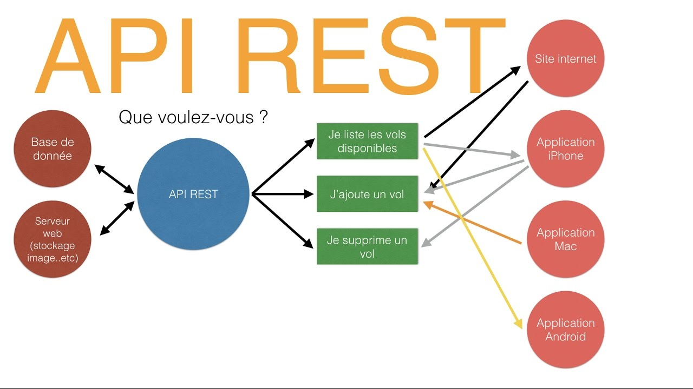

Aide mémoire API
Une API REST (Representational State Transfer Application Program Interface) permet aux logiciels de communiquer entre eux sur un réseau ou sur un même appareil. Le plus souvent les développeurs utilisent des API REST pour créer des services web. Les API REST utilisent des méthodes HTTP (Verbe HTTP et Code de Retour) pour récupérer et publier des données entre un client et un serveur.
En utilisant le protocole HTTP, les API REST permettent aux logiciels d’un appareil de communiquer avec les logiciels d’un autre appareil (ou du même appareil) même s’ils utilisent des systèmes d’exploitation et des architectures différents.
La communication va reposer sur le protocole HTTP (Compris par le client et le serveur), le serveur renvoie la ressource avec un langage que le client accepte. La réponse du serveur peut-être de différent type :
- JSON (JavaScript Object Notation), le format JSON est le plus utilisé actuellement du fait de sa simplicité.
- XML (Extensible Markup Language, comme le HTML par exemple).
- texte.
- …
Un échange normé
Une API repose sur un principe de questions / réponses normées. Cette liste est établie par le développeur. Elle peut être schématisée :

Repose sur le protocole HTTP

La question vers le serveur
La question vers le serveur est définie par le développeur de l'API. Celui-ci va prendre du temps pour la designer. Cette étape de « documentation technique » va passer par une utilisation cohérente :
- Des Verbes HTTP (une méthode === une action cohérente).
- Un format de sortie adéquat (JSON, XML, Autre).
- Un code HTTP (2xx, 3xx, 4xx, 5xx) en cohérence avec le traitement.
Si cette étape est correctement réalisée, il sera même possible de réaliser une documentation automatique avec des outils tels que :
Verbes HTTP
Les méthodes « HTTP » ?
- GET (Obtenir des données)
- PUT (Ajouter des données)
- POST (Ajouter des données)
- PATCH (Modifier des données)
- DELETE (Supprimer une données)
Mais également des ressources attendues
AcceptContent-TypeAuthorization …- …
Exemple :
GET /api.html HTTP/1.1
User-Agent: Mozilla/5.0 (Macintosh; Intel Mac OS X 10_15_7) Chrome/90.0.4430.30
Host: cours.brosseau.ovh
Accept-Language: fr-fr
Accept-Encoding: gzip, deflate
Connection: Keep-Alive
La Réponse du serveur
On répond avec un « HTTP Status Codes », un code « normé » qui signifie quelque chose
Un code une signification
- 200 OK
- 201 Created
- 301 Moved Permanently
- 400 Bad Request
- 403 Forbidden
- 404 Not Found
- 500 Internal Server Error
- 503 Service Unavailable
Un format de retour
- JSON (JavaScript Object Notation), le format JSON est celui le plus utilisé actuellement du fait de sa simplicité.
- XML (Extensible Markup Language, comme le HTML par exemple).
- texte.
- …
Zoom sur le JSON
- Décodable simplement.
- Léger.
- Lisible par un humain.
- Faiblement typé.
Un tableau
["a", "b"]
Un Dictionnaire
{
"cle1": "valeur",
"cle2": "valeur"
}
Découper pour mieux débuggé / supervisé / maintenir
L'utilisation d'API permet de découper la logique en différents « services » qui auront chacun un but précis (Micro-Service).
Chaque Micro-Service aura une tâche précise par exemple :
- Obtenir un utilisateur
- Ajouter un utilisateur
- Lister les utilisateurs
- Envoyer un SMS
- …
Le découpage en API va permettre de découper la logique en différent tiers pour :
- Simplifier la maintenance.
- Faciliter la supervision de chaque élément.
- Simplifier l'évolution du code.
Normer les API
Pour normer les API, il existe des outils tels que :
L'idée est de générer une documentation technique à partir du code source. Cette documentation technique permettra de générer des clients pour les différents langages.